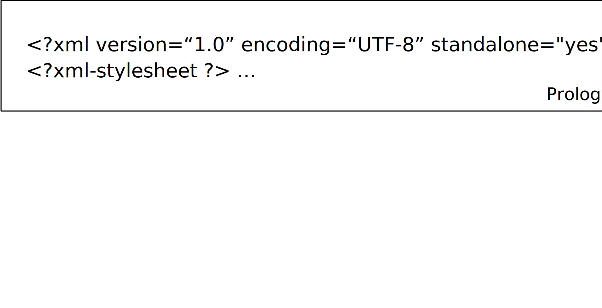
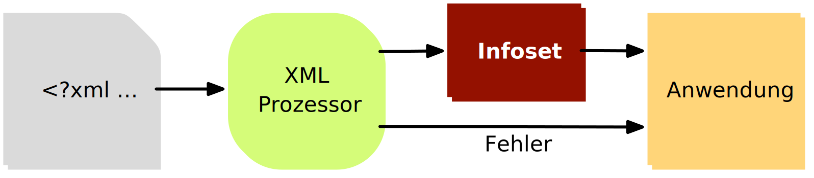
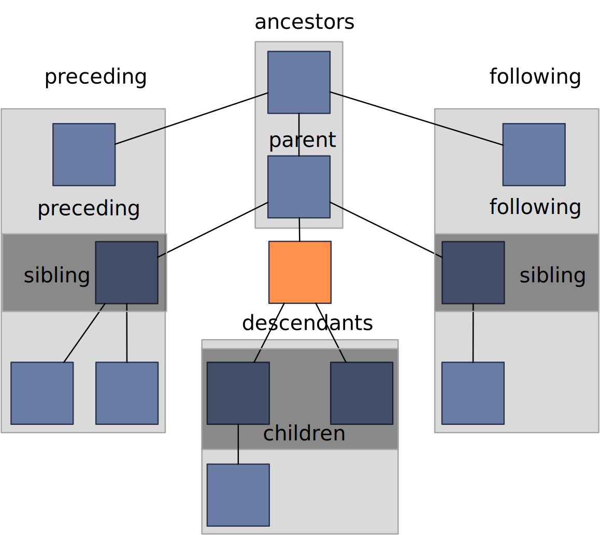

XML Dokument - allgemeine Struktur


michael.eichberg@dhbw-mannheim.de, Raum 149B
1.0
Sprachen, die verwendete werden, um Texte zu strukturieren und zu formatieren
maschinenlesbar
Beispiele:
HTML
XML
LaTeX
Markdown
reStructuredText
...
Auch wenn Markup-Sprachen für Menschen lesbar sind, sind sie in erster Linie für Maschinen gedacht. Darüber hinaus sollte im Allgemeinen vermieden werden, dass der Markup dem Formatieren dient/zum formatieren verwendet wird.
YAML hat keinen Dokumentenfokus und ist nicht (mehr) als Markup-Sprache klassifiziert.
Aufbauend auf Standard Generalized Markup Language (SGML)
SGML ist Standardisiert als ISO 8879:1986
In SGML ist die Basis für jedes Dokument eine Formatbeschreibung mit Hilfe einer Document type definition (DTD)
Beschreibt welche Elemente es gibt und wie diese ineinander geschachtelt werden können
<!ELEMENT note (head,body)>
<!ELEMENT head (#PCDATA)>
<!ELEMENT body (#PCDATA)>XML ist eine vereinfachte Version von SGML und wurde 1998 standardisiert.
XML dient der Kodierung und Strukturierung einzelner Instanzen von Dokumenten.
Ein XML Dokument kann man sich als einen Baum von Elementen vorstellen, die Informationen enthalten.
Dokumentenstruktur kann durch DTDs oder XML-Schemas beschrieben werden.
Eine explizite Beschreibung der Dokumentenstruktur ist nicht zwingend erforderlich (aber häufig sinnvoll).
XML Dokumente müssen stringente Anforderungen an die Syntax erfüllen (Well-formed XML Dokumente).
XML bildet die Basis für viele weitere Sprachen wie MathML, GraphML, SVG, …
Abfragen auf XML basierenden Dokumenten können mittels XPath oder XQuery durchgeführt werden.
Auf XML basierende Dokumenten können durch XSLT transformiert werden.
In Hinblick auf XML betrachten wir Dokumente als Instanzen von Informationen, die eine Struktur haben. Unter dieser Perspektive ist vieles ein Dokument:
Artikel, Bücher, Notizen, Gedichte, Romane
Technische Handbücher, Beiblätter, Produktverpackungen
Mails, Nachrichten
Rechnungen, Bestellungen, Lieferscheine
Log Dateien, Protokolle, Konfigurationsdateien
Wesentliche Anforderungen bzgl. der Syntax eines XML Dokuments (Well-formed XML Dokumente):
es gibt nur ein Wurzelelement
Element überlappen sich nicht; d. h. für alle Elemente (außer dem Wurzelelement) gilt: Befindet sich das Start-Tag im Inhalt eines anderen Elements, so befindet sich das End-Tag im Inhalt desselben Elements. Es ergibt sich somit ein Baum.
Internationalisierung durch die Verwendung von Unicode.
Validierung von Instanzen (d. h. von Dokumenten).
Lokalisierung von Namen über Namensräume (z. B. Mein Haus ist nicht dein Haus).
Ein menschenlesbares Format.
Hierarchische Struktur.
Erweiterbarkeit.
Wie auch in HTML (HyperText Markup Language) kann auch in XML jedes Zeichen als Referenz auf ein Unicode-Zeichen kodiert werden.
Beispiel:
∀α∈Γentspricht:
∀α∈Γ
<?xml version="1.0" encoding="UTF-8" standalone="yes" ?>
<lehrveranstaltungen status="akkreditiert">
<!-- Modul muss überarbeitet werden... -->
<modul>
<vorlesung>Web Entwicklung</vorlesung>
<vorlesung>Verteilte Systeme</vorlesung>
</modul>
</lehrveranstaltungen><?xml version="1.0" encoding="UTF-8" standalone="yes"?>
<lehrveranstaltungen>, <modul>, <vorlesung>
</lehrveranstaltungen>, </modul>, </vorlesung>
status
Web Entwicklung, Verteilte Systeme
Die Spezifikationen bzgl. encoding (Kodierung des Dokuments) und standalone (Ist das Dokument von anderen Dokumenten abhängig) sind nur Pseudoattribute, da sie zum Prolog des Dokuments gehören.
die Syntax von XML Dokumenten wird durch eine formale Grammatik (hier: EBNF) beschrieben.
Beispiel - Beschreibung des Prologs von XML Dokumenten in EBNF:
prolog ::= XMLDecl? Misc* (doctypedecl Misc*)?
XMLDecl ::= "<?xml" VersionInfo EncodingDecl? SDDecl? S? "?>""
VersionInfo ::= S "version" Eq ("'" VersionNum "'" | '"' VersionNum '"')
Eq ::= S? "=" S?
VersionNum ::= "1." [0-9]+
Misc ::= Comment | PI | SWir werden uns auf eine informelle Beschreibung der Syntax der wichtigsten Konstrukte beschränken.
EBNF (Extended Backus-Naur Form) 101:
'+' bedeutet 'eins oder mehr',
'?' bedeutet 'optional'
'*' bedeutet 'null oder mehr'.
Klammerkonstrukte werden gruppiert.
'|' (Pipe-Zeichen) bedeutet 'oder'.
'S' steht für Leerzeichen (hier).
'string' bedeutet das Vorkommen der wörtlichen Zeichenkette.
[c-c] ist eine Zeichenklasse und steht für ein einzelnes Zeichen im angegebenen Bereich.
EBNFs sind eng mit regulären Ausdrücke verwandt. EBNFs können jedoch auch rekursive Strukturen beschreiben und werden häufig für die Beschreibung von Programmiersprachen verwendet.
Im Allgemeinen bestehen Elemente aus einem Start-Tag (z. B. <start>), seinem Inhalt und einem End-Tag (z. B. </start>).
Der Inhalt eines Elements ist geordnet.
Start-Tags können Attribute haben - Name/Wert-Paare (z. B. <start kind="slow"/>).
Die Elemente müssen wohlgeformt sein: balanciert, konforme Syntax, gültige Attribute, keine Duplikate, usw.
Elemente können leer sein (z. B. <empty/>); d. h. sie haben keinen Inhalt, können aber Attribute haben.
Attribute sind ungeordnete Name/Wert-Paare, die in einem Start-Tag eines Elements enthalten sind.
Jedes Attribut darf nur einmal in einem Element vorkommen.
Ausgewählte Zeichen müssen maskiert werden, wenn sie im Wert vorkommen sollen.
Die Werte von Attributen werden normalisiert (z. B. werden Zeilenumbrüche entfernt).
Entity Reference |
Zeichen |
|---|---|
< |
< |
> |
> |
& |
& |
" |
" |
' |
' |
Oft wird Leerraum (Leerzeichen, Zeilenumbrüche, Tabulatoren usw.) hinzugefügt, um das XML "lesbarer" zu machen.
Leerzeichen können als nicht signifikant gekennzeichnet werden; dies erfordert jedoch einen validierenden XML Prozessor.
Infosets (Information Sets)
Ein Infoset ist eine (abstrakte) Darstellung eines XML Dokuments; losgelöst von der konkreten Syntax (z. B. ob der Wert eines Attributs in "" oder '' gefasst wurde; oder ob Entity References verwendet wurden, etc.).
Ein Infoset enthält alle Informationen, die in einem XML Dokument enthalten sind.
Ein Infoset ist eine Hierarchie (oder ein Baum) von Elementen mit benannten Eigenschaften.
Die verschiedenen Info Items eines Infosets stellen z. B. die folgenden Informationen bereit:
Kinder, Wurzelelement, Basis-URI.
lokaler Name, Kinder, Attribute, Vorgänger
lokaler Name, normalisierter Wert, deklarierendes Element
Es gibt weitere Info Items für Kommentare, Verarbeitungsanweisungen, Text, etc.
XML Namespaces
Wenn wir nur einen Namen(sraum) haben sollten...
Was würde passieren, wenn wir Markup von zwei verschiedenen Autoritäten nutzen wollten?
Wie assoziiere ich Semantik mit gemischtem Markup?
Wie verbinde ich ein Schema (oder Regeln) mit dem gemischten Markup?
Variante 1:
<date>1/27</date>Variante 2:
<date><year>2004</year><day>1</day><month>27</month></date>Wie kann ich beide unterscheiden?
Namen werden in zwei Teile unterteilt:
Ein Bezeichner für einen Namensraum.
Ein Bezeichner für einen Namen in diesem Namensraum
Diese Teile werden durch einen Doppelpunkt getrennt und QNames (Qualified Names) genannt.
Beispiel:
<c:pseudocode>
<c:comment xlink:href="http://somewhere..."/>
</c:pseudocode>Dies gilt nur für Element- und Attributnamen.
Jedes Präfix, das "xml" enthält, ist für das W3C reserviert.
Präfixe müssen durch assoziierte Präfixe mit Namensräumen deklariert werden, bevor sie verwendet werden.
Diese Assoziation kann nur für Elemente deklariert werden.
Die Syntax lautet: xmlns:prefix="some:uri".
Beispiel:
<c:pseudocode xmlns:c="urn:publicid:IDN+mathdoc.org">
<c:comment xlink:href="http://somewhere..."
xmlns:xlink="http://www.w3.org/..."/>
</c:pseudocode>Bevor bedeutet, dass der Präfix auf dem Element, in dem das Präfix vorkommt - oder auf einem Vorgängerelement - deklariert werden muss.
Das Präfix xml ist vordefiniert und die URI ist: http://www.w3.org/XML/1998/namespace.
Mit Hilfe einer URI (Uniform Resource Identifier) wird ein Namensraum identifiziert. Die URI muss nicht aufgelöst werden können.
URI-Werte können Webadressen sein (z. B. http://youdomain.com), aber auch andere Werte wie URNs (Namen): urn:... oder andere Schemata: scheme:scheme-specific-part.
Der Standardnamensraum kann vorgegeben werden.
Dies gilt nur für Elementnamen ohne Präfixe.
Die Syntax lautet: xmlns="some:uri".
Beispiel:
<c:pseudocode xmlns:c="urn:publicid:IDN+mathdoc.org">
<c:comment xmlns="http://www.w3.org/1999/xhtml">
<p>Dieser Code macht folgendes:</p>
...
</c:comment>
</c:pseudocode>Mit xmlns="" kann der gesetzte Standardnamensraum aufgehoben werden.
Der Geltungsbereich einer Deklaration eines Namensraums ist das Element, in dem sie vorkommt.
Es gibt keinen Unterschied zwischen Deklarationen auf dem Wurzelelement und anderswo.
Das Element, seine Attribute und seine Kinder können dieses Präfix in ihren Namen verwenden.
Namespaces können redefiniert werden.
Das Präfix ist nur eine Abkürzung des eigentlichen Namens des Namensraumes (d. h. des Wertes der Deklaration).
Ein Name besteht nun aus zwei Teilen:
der Name des Namensraum, der mit dem Präfix verbunden ist.
der lokale Name; d. h. der Teil des Namens nach dem Doppelpunkt.
Elemente
der Name des Namensraums oder no value, wenn es keinen gibt.
der lokale Teil des Namens (d. h. nach dem Doppelpunkt).
der für das Element verwendete Namensraumpräfix oder no value, wenn es keinen gibt.
Eine ungeordnete Liste von Namespace Info Items.
Eine ungeordnete Liste aller Attribute des Elements, die Namensräume deklarieren.
Attribute
der Name des Namensraums oder no value, wenn es keinen gibt.
der lokale Teil des Namens (d. h. nach dem Doppelpunkt).
der für das Attribut verwendete Namensraumpräfix oder no value, wenn es keinen gibt.
Setzen des Standardnamensraums
<pseudocode xmlns="urn:publicid:IDN+mathdoc.org">
<comment>e = mc^2</comment>
</pseudocode>Definition eines Präfixes (hier: m)
<m:pseudocode xmlns:m="urn:publicid:IDN+mathdoc.org">
<m:comment>e = mc^2</m:comment>
</m:pseudocode>Redefinition eines Präfixes (hier: m)
<m:pseudocode xmlns:m="urn:publicid:IDN+mathdoc.org">
<m:comment xmlns:m="urn:comment">e = mc^2</m:comment>
</m:pseudocode>Erstellen Sie ein XML Dokument nach folgenden Vorgaben:
Das Wurzelelement ist document.
Das Dokument fasst mehrere Bestellungen (order-Elemente) zusammen.
Es gibt vier Bestellungen (d.h. vier order-Elemente).
Jede Bestellung enthält mehrere Produkte (d. h. product-Elemente).
Pro Produkt soll angegeben werden um welches Produkt es sich handelt und wie viele davon bestellt wurden. Fügen Sie den Bestellungen zwischen einem und drei Produkte hinzu.
Die Bestellungen gehen an verschiedenen Partnersysteme und sollen deswegen durch entsprechende Namensräume voneinander getrennt sein.
XPath ist eine Syntax/Sprache zur Adressierung von Knoten in einem Dokument.
XPath-Ausdrücke sind Pfadausdrücke (path expressions).
Erlaubt es folgende Dinge auszudrücken:
Selektiere alle vorlesung-Kinderelemente des lehrveranstaltungselements-Elements.
Finde die Geschwisterknoten des Elements vorlesung.
Finde das Element lehrveranstaltung, bei dem das Attribut status den Wert aufgekündigt hat.
Es handelt sich um einen eigenen Mini-Standard, der von vielen Spezifikationen verwendet wird (XSLT, XQuery, ...).
Implementationen sind in vielen Programmiersprachen verfügbar (z. B. Java, JavaScript, Python, ...) und alle Browser unterstützen XPath-Ausdrücke für die Selektion von Elementen.
Ein Pfadausdruck besteht aus einer Folge von Schritten, die durch Schrägstriche getrennt sind. (Ähnlich wie bei Dateipfaden.)
Ein einzelner Schrägstrich ("/") steht für das Wurzelelement.
Nachfolgende benannte Schritte im Pfad stellen Kinder dar:
/lehrveranstaltungen/modulWählt das untergeordnete Element modul des Dokumentenelements lehrveranstaltungen aus.
XPath-Ausdrücke müssen nicht bei der Wurzel starten:
modul/vorlesungWählt das vorlesung-Kinderelement des modul-Elements aus.
Das Ergebnis der Auswertung eines XPath-Ausdrucks ist ein Node Set oder ein einzelner Wert (ein String, eine Zahl oder ein Boolean).[3]
Ein Node ist nur ein anderer Begriff für Info Item.
Beispiel
Sei das folgende XML-Dokument gegeben:
<modul>
<vorlesung>Eins</vorlesung>
<vorlesung>Zwei</vorlesung>
</modul>Dann gibt der folgende Ausdruck zwei vorlesung-Elemente zurück:
/modul/vorlesungAttribute können über den entsprechenden Schritt: @Name ausgewählt werden.
Beispiel
Sei das folgende XML-Dokument gegeben:
<modul>
<vorlesung mhb="123">Eins</vorlesung>
<vorlesung mhb="456">Zwei</vorlesung>
</modul>Dann würde der Ausdruck:
/modul/vorlesung/@mhbDie beiden mhb Attribute als Menge zurückgeben.
Jeder Schritt eines XPath-Ausdrucks kann einen QName verwenden: <Präfix>:<Lokaler Name>
Das Matching basiert auf dem lokalen Namen und dem Namen des Namespaces und nicht auf dem Präfix.
Beispiele für XPath-Ausdrücke mit Namensraum:
/dhbw:modul/dhbw:vorlesung
/dhbw:modul/dhbw:vorlesung/@mhb
/dhbw:modul/dhbw:vorlesung/@i:mhbIn dem gezeigten Beispiel müsste die Anwendung die Präfixe (dhbw und i) mit den entsprechenden Namensräumen verknüpfen.
kein Präfix = kein Namensraum
Ein Namenstest innerhalb eines Pfadausdrucks, der kein Präfix spezifiziert ist nur für Namen ohne Namensraum erfolgreich!
Zum Beispiel:
m:section/titleselektiert das Element title im folgenden Beispiel, da es keinen Namensraum hat:
<m:section xmlns:m='urn:...'>
<title>Kein Namespace</title>
</m:section>in folgendem Beispiel jedoch nicht:
<m:section xmlns:m='urn:...'
xmlns='urn:something-else...'>
<title>Ich habe einen Namensraum...</title>
</m:section>Der Namensabgleich basiert auf dem lokalen Namen und dem Namen des Namensraums.
* wird als Platzhalter für Namen verwendet werden.
Beispiele:
Alle Elemente, die in einem modul-Element enthalten sind:
/modul/*Alle Attribute eines vorlesung-Elements:
/modul/vorlesung/@*Verwendung von Namensräumen:
/dhbw:modul/dhbw:*
/dhbw:modul/dhbw:vorlesung/@i:*Der Namensraum Präfix kann nicht durch ein Wildcard ersetzt werden.
Die Auswertung erfolgt immer in Bezug auf einen Kontextknoten.
Der Kontextknoten wird mit . (Punkt) referenziert.
Beispiel - Selektion der Attribute des Kontextknotens:
./@*Der Kontextknoten ist implizit.
Der Kontextknoten muss nicht zwingend ein Element sein.
Prädikate erlauben die Angaben von Bedingungen und folgen der Deklaration des Schrittes.
Prädikate sind in eckigen Klammern ([ und ]) eingeschlossen.
Verschachtelte Prädikate sind möglich.
Beispiel
/modul/vorlesung[@mhb='123']Wählt das vorlesung-Element aus, das das Attribut mhb mit dem Wert 123 hat.
Die Verwendung von (komplexen) Pfadausdrücken in Bedingungen ist ebenfalls möglich.
Beispiel
lehrveranstaltungen/modul[vorlesung/@mhb='123']boolesche Operatoren: (or und and)
boolesche Funktionen: not ( boolean ), lang ( string ), true(), false(), ...
Mathematische Funktionen: sum( node-set ), number( object ), ...
Zeichenketten: string( object ), concat( string, string, string* ), starts-with( string, string ), contains( string, string ), substring( string, number, number ), string-length( string ), normalize-space( string ), ...
Node-set Funktionen: last(), position(), count( node-set ), id( object ), local-name( node-set ), namespace-uri( node-set ), ...
Beispiel - alle Element, die den lokalen Namen modul haben:
//*[local-name()='modul']vgl. XPath 1.0 Funktionen
Über den Kontextknoten kann auf übergeordnete und vorgelagerte Elemente zugegriffen werden.
.. steht für das übergeordnete Element; wie bei Verzeichnissen.
Beispiel
/modul/vorlesung[@mhb='123']/..Wählt das modul-Element aus, das das vorlesung-Element mit dem Attribut mhb und dem Wert 123 enthält.
mit dem // können Elemente, die keine direkten Kinder sind abgeglichen werden
Es werden somit die Nachkommen des aktuellen Kontexts durchsucht.
Beispiel
lehrveranstaltungen//vorlesung[@mhb='123']/..Wählt alle vorlesung-Elemente mit dem Attribut mhb und dem Wert 123, die Nachkommen des lehrveranstaltungen-Elements sind aus.
Funktion |
Beschreibung |
|---|---|
text() |
Wählt den Textinhalt eines Elements aus. |
comment() |
Wählt Kommentare aus. |
processing-instruction() |
Wählt Verarbeitungsanweisungen aus. |
node() |
Wählt alle Knoten aus. |
Beispiel - alle Kommentare, die Kinder des document-Elements sind:
/document/comment()Baumstruktur
Weitere Beziehungen
Jedes Element kann Attribute haben (welche keine Kinder im Baum sind).
Jedes Element kann Namensräume haben (welche keine Kinder bzgl. des Baums sind).
Baumbeziehungen:
ancestor, ancestor-or-self
parent, child, self
descendant, descendant-or-self
following, following-sibling
preceding, preceding-sibling
Weitere Beziehungen:
Attribute
Namensräume
Beispiel:
//modul/ancestor::lehrveranstaltungenWählt das lehrveranstaltungen-Element aus, das das modul-Element enthält.
Beispiel:
//modul/child::vorlesungWählt das vorlesung-Element aus, das ein Kind des modul-Elements ist.
Alle gängigen Browser unterstützen XPath 1.0.
Gängige Bibliotheken (z. B. Saxon) unterstützen XPath 3.1.
Schreiben Sie XPath-Ausdrücke, um die folgenden Anfragen zu beantworten:
Wählen Sie alle orders-Elemente aus.
Wählen Sie alle product-Elemente aus, die im Namensraum http://fruits.com sind.
Berechnen Sie die Summe der Werte der quantity-Attribute, die zu Bestellungen aus dem Namensraum von http://fruits.com gehören.
Berechnen Sie die Summe der Werte der quantity-Attribute, die im Namensraum http://meat.com sind.
Berechnen Sie die Summe der Werte aller quantity-Attribute; unabhängig von dem konkreten Ziel der Bestellung.
Wählen Sie alle order-Elemente aus.
Wählen Sie das erste product-Element jeder Bestellung aus, die http://meat.com zugeordnet ist.
Wählen Sie alle order-Elemente aus, bei denen mehr als fünf Produkte bestellt wurden.
Bestimmen Sie wie viele Bestellungen es gibt.
Selektieren Sie alle Produkte der Bestellungen, die genau vier Produkte umfassen.
Voraussetzungen
Installation von node.js
Installieren Sie die neueste Version von node.js von https://nodejs.org/en. Benutzen Sie bitte die neueste Version auch wenn diese keine LTS Version ist.
Installieren Sie die benötigten node.js Pakete
Am Besten einfach im "aktuellen Verzeichnis" in dem die Übungsdateien liegen ausführen:
npm install jsonschema
npm install xpath
npm install @xmldom/xmldomAusführen der XPath Ausdrücke
Nutzen Sie den XPath Evaluator, um die XPath-Ausdrücke auf dem XML-Dokument auszuführen:
https://gist.github.com/Delors/189629b86265463e4a625924a9f705c8
(Speichern Sie das Script in der Datei xpaths_evaluator.js und führen Sie es mit node xpaths_evaluator.js <xpath specifications> aus.)
In der Datei finden Sie am Anfang eine Beschreibung wie die Dateien auszusehen haben. Alternativ können Sie auch die XML Datei demo.xml und die Datei demo.xpaths.json herunterladen und als Grundlage nutzen.